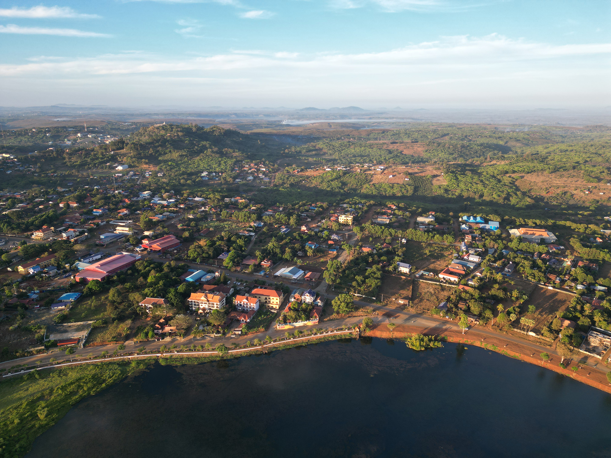

Nature
Explore forests, lakes, waterfalls and peaceful natural landscapes.
Discover More
A province of forests, waterfalls, unique landscapes, indigenous cultures and peaceful communities.
Ratanakiri is a peaceful province in northeastern Cambodia. It is known for beautiful nature, local communities, waterfalls, forests and Yeak Laom Lake.
Ratanakiri is located in the northeast of Cambodia. It borders Laos to the north, Vietnam to the east, Mondulkiri Province to the south and Stung Treng Province to the west.
Banlung is the provincial capital and is an important starting point for exploring the surrounding forests, lakes and waterfalls.
View Map
There is more to explore than just beautiful places. Discover the nature, culture, food and people of the province.
Explore forests, lakes, waterfalls and peaceful natural landscapes.
Discover MoreLearn about indigenous communities, traditions, crafts and local ways of life.
Discover MoreTaste local dishes and discover ingredients connected to the region.
Discover MoreMeet communities and learn about their connection with the land.
Discover MoreRatanakiri includes forests, rivers, farmland and volcanic landscapes. Agriculture is an important part of local life, with products such as rubber, cashew, rice and fruit.
Tourism is also growing around natural attractions such as Yeak Laom Lake, waterfalls and Virachey National Park.

Ratanakiri is well known for its natural environment. Yeak Laom is a volcanic crater lake surrounded by forest, while waterfalls and rivers create many places to enjoy the outdoors.
Explore Nature
Ratanakiri is home to Khmer people and several indigenous communities, including Tampuan, Kreung, Jarai, Brao and Kavet communities.
Their languages, traditions, crafts and relationship with the land are an important part of the province's cultural identity.
Indigenous Communities
Ratanakiri brings together beautiful nature, interesting landscapes, local food and diverse communities. It offers visitors an opportunity to explore a quieter side of Cambodia.
Explore beautiful places, learn about local culture and plan your journey through Ratanakiri.